Week 2
Week 3
Week 4
Week 5
Week 6
Week 7
Week 8
Week 9
Week 10
Week 11
Week 12
Week 13
Week 14
Week 15
Week 16
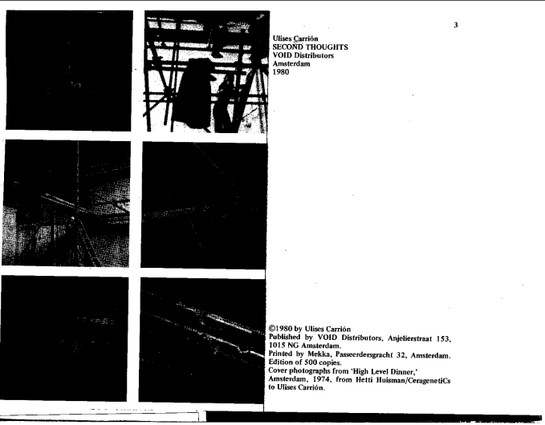
Ulises Carrión - Selections from Second Thoughts
The author's discussion on the limitations of Bookwork resonated with me. One is that Book Art utilizes books as a medium, which would be constrained by the mandatory format of the books, namely covers, pages, and layouts. Second is that the Book Art is also restricted by the content that can be shown, primarily linear language, tables, illustrations, and other printable content. Those concerns can lead to questions: 1. Is the book a suitable medium for this art? 2. Is reading books a good way to understand this art? (In this case, readers are the audience) 3. How to differentiate Book Art from normal publicans?
Also, the author explores the difference between Mail Art and Book Art. Mail Art bypasses official art distribution and approval systems, such as publishers, museums, and galleries, allowing for greater creation equality. Mail artists don't need to rely on fixed venues such as exhibition halls to share their artworks. In addition, Mail Art also is considered to be more open and inclusive because all works will be exhibited once they are sent.
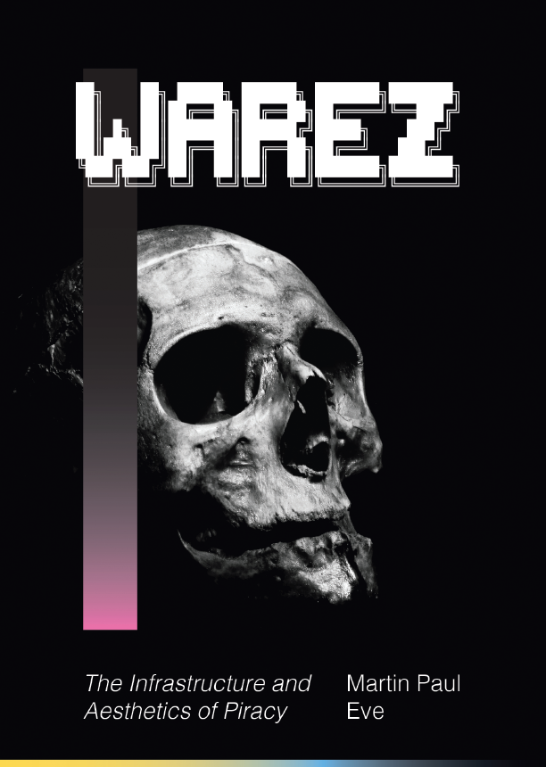
Martin Paul Eve - Selections from Warez The Infrastructure
and Aesthetics of Piracy
One commonly used meaning of "Piracy" is copying and distributing another person's intellectual property without authorization. In most countries, it is considered illegal, but some open-source advocates argue for a middle ground between freedom and intellectual property. The author raises the idea of "reuse artworks in the Scene," in which legal rulings don't directly inhibit this type of sampling and reuse (they take the original and graft their own smaller sample underneath it). From my perspective, the line between piracy and getting inspired is very blurred in the field of artistic creation because humans cannot create anything beyond perception, so all new creation is essentially a fusion and a patchwork.
In addition, some of this subculture's proponents advocate the waltz-scene just for more creative freedom. Under the DemoScene and the Warez Scene, the subculture advocates perform in front of other people by playing back one's talented and creative computer inventions.
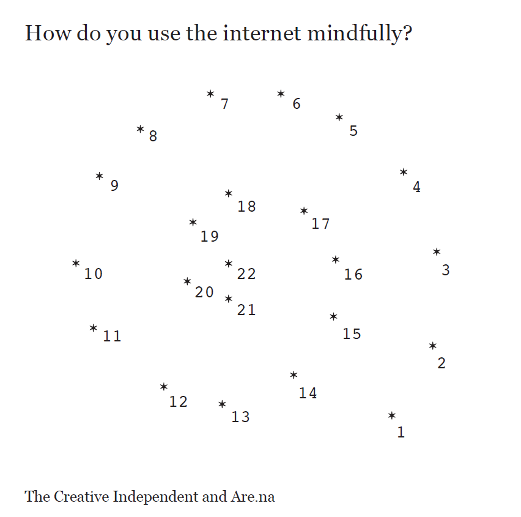
Selections from New Modernism(s)
I agree with the author's idea that the internet should not only be powered by a limited number of huge Leading technology corporations. The internet/web is created to connect people in the world, ignoring geographical distance. Web controlled by interest groups are cages that stifle diversity. From my perspective, this idea sounds like a recent emerging concept—Web 3.0. Web 3.0 community is the concept of a decentralized autonomous organization (DAO). Decentralization provides some sort of self-governance for users on the web; in this case, users can own their independent digital assets without entirely relying on large companies' data services.
In addition, the author argues that the website (or artist's portfolio) probably should not be an archive of their complete works. Other than considering a personal website as one's works showroom, it can also be a "garden" or an "ocean", where author-viewer interaction can bring new perspectives to the website as time goes by.
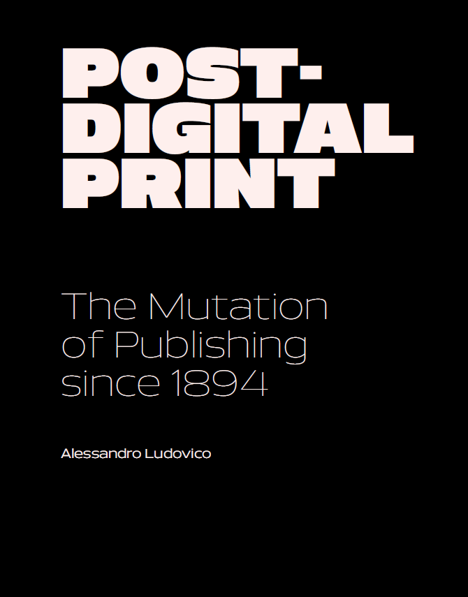
Selections from New Modernism(s)
I resonate with the author's view on hybrid publication because both paper publication (other physical artworks) and web carrier have their own limitation. As the author wrote, the paper has always been perceived as a stable extension of human memory, 'platform-independent' though physically limited. However, the physical publications are subject to the publisher's preference and are difficult to spread. At the same time, some content will inevitably be lost by digitizing some artworks (turned into a photo or text).
Some of the characters of online archives are potentially interconnected and collectively searchable; therefore, the essential feature of online publishing is sharing, and not just as an extension of collective memory. Will digitizing limit the format of artistic expression? Does the nature of sharing and distribution diminish creative independence, making authors more concerned with sales and clicks (buzz)?
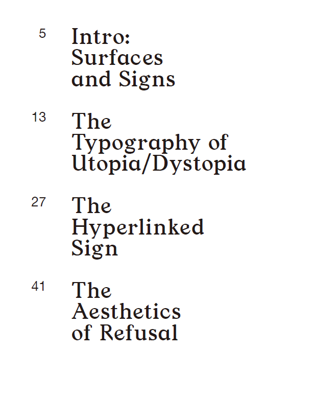
Selections from New Modernism(s)
I resonate with the author's idea that "The microblog becomes the manifesto, the medium is Net-art or memes, and the ideology is maximum reblogs likes and notes." In the past, anti-aesthetic has always been the engine of change in art and design. The early modernists were somehow considered to be ugly, inaccurate, and institutionally inappropriate. Therefore, a necessary element of artistic change is to oppose "Academism".
But I believe that Web Art blurs the line between mainstream and non-mainstream art (The line between mainstream media and self-publishing has also become blurred as well). With the User-friendly interface of social media and web editing software, everyone can be a content creator and deliverer. Nowadays, almost everyone has their own social pages (personal web pages). The way people express their ideology is mainly through retweets and comments on social media platforms, and the number of views, retweets, and comments has become an important measure of influence. We need to think further: what kind of content is suitable for web art? To what extent and in what ways does it interact with readers (users)?
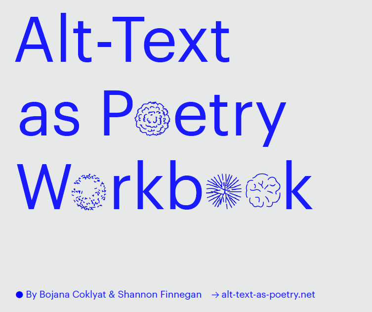
Bojana Coklyat & Shannon Finnegan - Alt-Text as Poetry Workbook
Before reading this article, I haven't thought about the importance of alt text for web accessibility, and I never hesitate when I place image or video content on my websites. However, it is very difficult for me when I try to write alt text. I have no idea what I should focus on (because so much information is provided in one image). And I am unsure what words I should use (because people who use alt text may not have the same perception of color/shape as me).
Especially when I attempt to describe an image where people are included, it is also challenging for me to describe their facial expression, the subtle emotion, and people’s aura (vibe). Different people have completely different feelings about these things. As the author wrote, Information is both lost and gained, and the act of describing also adds Information.
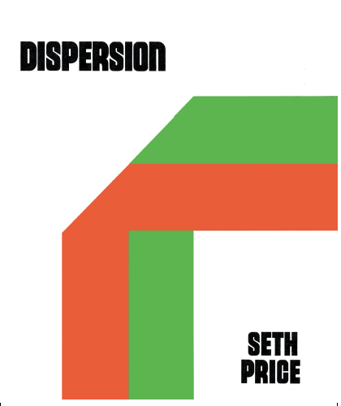
Metahaven - White Night Before A Manifesto & Seth Price - Dispersion
In this article, the author greatly emphasizes discussing the relationship between production and distribution. The author argues that rather than production, distribution was the primary way in which works generate meaning, and the artists themselves should find the right distribution path. The classical avant-garde avoids social communication and excludes itself through incomprehensibility. And due to incomprehensibility, it also loses the possibility of his being broadly distributed by the mass media. Therefore, artists need to make certain sacrifices and trade-offs for wide distribution. The form of Net Art, which does not require physical media, such as museums and exhibitions, also offers more possibilities.
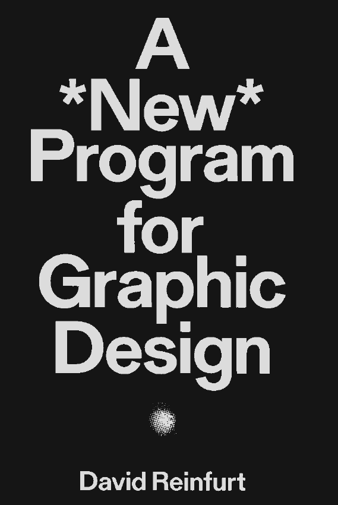
David Reinfurt - Selections from A *New* Program for Graphic Design
The case study of Citibank ATM inspires me to think more about how users interact and communicate with the websites. The Citibank ATM resulted in a first-person interface, which functions as a robotic bank receptionist. Therefore, the interaction started with, "Hello. May I help you? "and continued to guide a user through the banking process, confirming each step along the way like the user is interacting with a real person. I am always uncertain about whether my website should focus on communicating with users or should it focus on providing more information.
There is a process in the UX design called prototype usability test, which means the developers will show the paper prototypes to the potential users and let them click through the tabs to see whether the process is coherent and where users feel hesitant or lost. When I design my websites, I always feel unsure about how much instruction needs to be given to the user. For instance, I try to place a "scroll down" arrow to instruct my users that there is more information down the page. But I can't tell whether it is redundant information. It is difficult to make the trade-off between the risk that the users might get lost and the risk of my website being overly complicated.
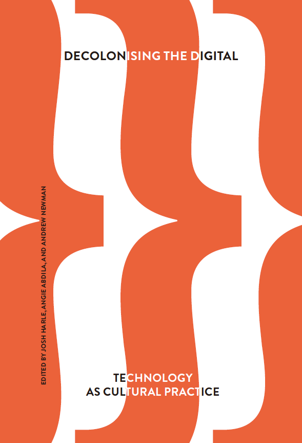
David Reinfurt - Selections from A *New* Program for Graphic Design
As a non-native English speaker, I resonate with the author's view on the dominance of the English language in the underlying logic of computer programming languages. The mainstream programming languages not only use English as the protocols and predefined names but also utilize English linguistics as their basic logic.
Two years ago, Huawei, a leading information and communications technology (ICT) infrastructure provider in China, announced that they were developing a programming language exclusively utilizing Chinese. However, people looked into its prototype and found that they just translated the input word-by-word from several existing programming languages, and this project has yet to be moved forward after the first release. As the author wrote in this article, because compared to other languages, the Latin language occupies the least space in the system after conversion to binary, it is very inefficient to include other languages in the system. Currently, there is a lack of motivation to change this existing system.
Also, the author gives an example that Arabic languages are sometimes not well-displayed. So, the experience of seeing text like this in public is a profoundly hurtful reminder to every Arabic reader that the digital world was not built for them and makes them question their culture in the digital era. To expand language inclusiveness in the digital age, the author also proposes creating a way to integrate languages in the programming field. However, I doubt that this approach will work. Take the example of Korean; the Korean used by the younger generation has a great number of English words (mostly Nouns). Because they preserve the pronunciation and meaning of those English words, it sounds almost like speaking English in Korean grammar. Therefore, there is a huge difference between the common words used by young people and middle-aged or older people. The change of the Korean language under the influence of Western culture can suggest that the languages can not be integrated but invaded by some more dominant languages.
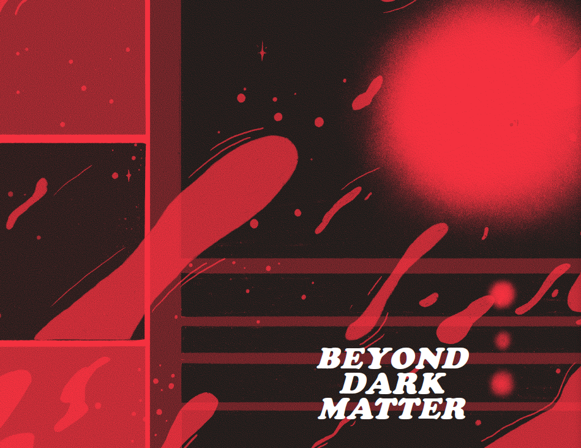
Neta Bomani & Sabii Bornologic - Beyond Dark Matter from Logic Issue 15 Beacons & Paul Saulellis - Performing the Feed
This week's reading reminds me of the recently hot topic: Metaverse, a universal and immersive virtual world facilitated by virtual reality and augmented reality techniques. The author talks about the trust issues when people interact with bots, even if they highly simulate real human behaviors. The trust issue can also occur in the virtual internet world because people can not tell whether they are interacting with real people or just talking to machine-generated programs. In addition, there are huge legal challenges when transforming some human experiences from the physical world to an increasingly immersive virtual world. The user’s behaviors are very difficult to regulate.
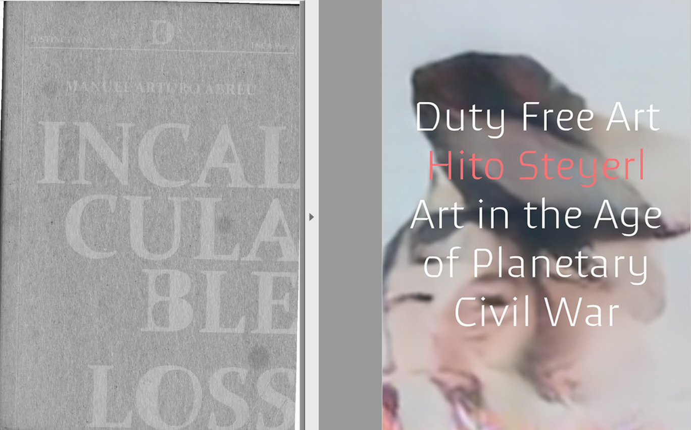
Hito Steyerl - Why Games Or Can Art Workers Think &
Manuel Arturo Abreu - Incalculable Loss
The author mentions the "social credit" scores system in China, which includes credit scores derived from financial activities and records citizens' interactions with other government departments, such as social security insurance payment, health data, and petitioning records. Therefore, in the beginning, this system aims to assess the risk of lending and the ability to repay the loan on time, but currently, it also functions to monitor the cash flow of individuals.
A very similar system was established in China during the pandemic, called "Jian Kang Ma" (Health Code System). This application was installed in the cell phone, collecting location data based on the cellular signaling locations from carriers, traffic data from public transportation, and health data from public hospitals and self-reports. It will automatically assign a code to the user ranging from red (high risk), yellow (moderate/possible risk), and green (low risk). This Health Code System is very intensively used in Chinese society because whenever you need to enter a public space, it needs to be checked. It originally intended to manage the COVID-19 crisis as a new social infrastructure by efficiently identifying the person at high risk of COVID-19. However, due to the lack of regulation on the scope of data collection and the scope of data usage, it now becomes a very powerful platform to surveil the citizens' locations and control so-called "high-risk" people by assigning the "red" code to them.
In addition, as the author writes, "the past is not a record of causal relations, but raw material for increasing predictive power," this new social infrastructure may also predict the potential destabilizing factors in the society, enabling the government to prepare in advance. But the question is: Can this model make a fair prediction and assign the correct code when facing the incalculability of human actions?
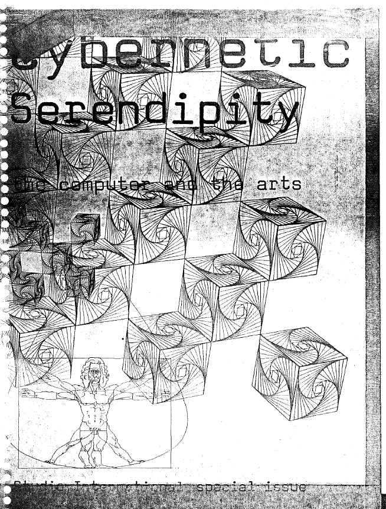
Jasia Reichardt ed - Selections from Cybernetic Serendipity the Computer and the Arts
I found the idea of computer music very intriguing. It has been a long time since songwriters and music producers utilized programming software to make synthetic sound effects and produce scores. But the artists in this article treat computers not only as well-qualified assistants but also play with the computer program's randomness. For example, the computers were programmed to select the intervals between successive notes according to the table of probabilities. Although I don't have enough technical background in physics to understand the relevant acoustic theory demonstrated in these experiments, I believe it is a way to break the stereotypes and try some experimental compositions. I learned about music theory when I practiced piano, where the chords are divided into consonant chords and disconsonant chords, and there are very strict rules about how to arrange them. I am quite inspired by randomly assigning notes by computers and thinking beyond the limits of chords, and I also hope to try it myself.
Boris Groys - Art on the Internet & Christine T. Wolfe - Computing in Crip Time from Logic Issue 16 Clouds
Computing in Crip Time demonstrates that disabled/chronically ill and neurodivergent people experience time and space differently than others, especially from a perspective of a UX designer (user experience researcher). It makes me think about integrating more inclusive design into my websites and experiencing them from different views. For instance, some interactive functions in my websites, such as hovering and animations, may hinder the flow of use for users with vision disabilities and motor problems. In addition, it is also essential to design websites that can work closely and seamlessly with the phone or computer’s built-in accessibility features.
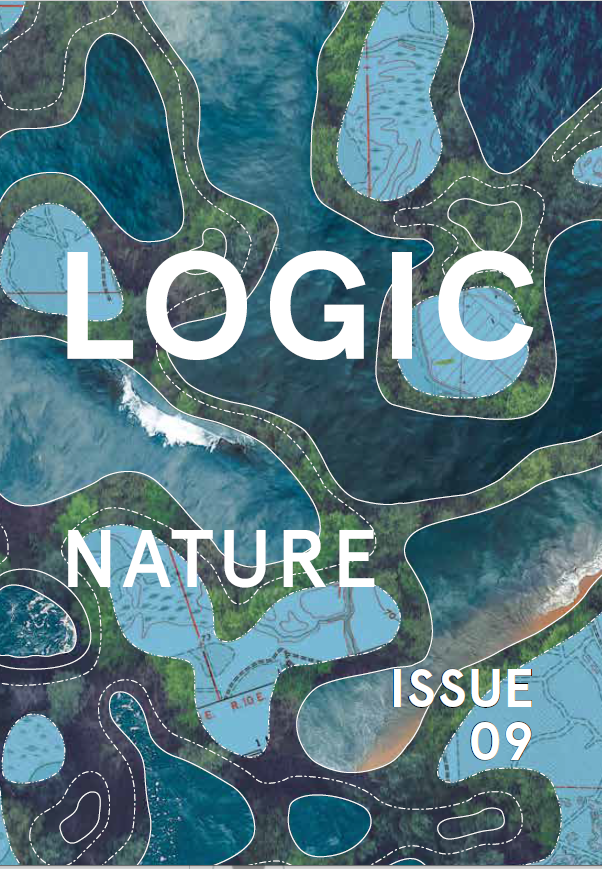
Alyssa Battistoni - A Repair Manual for Spaceship Earth from Logic Issue 9 Nature & Wendy Hui Kyong Chun - On Software or the Persistence of Visual Knowledge
The author mentions the idea of “user amplification,” which represents the core of the current human-computer interaction field. A good user experience should let users feel a certain sense of control of the app. For instance, when the user clicks a button, there must be feedback on this action, which clearly demonstrates as “instructions received” or “action completed.” The same logic applies to the progress bar on the websites. A progress bar vividly informs the respondent approximately how much more time/steps it might take for this task, reducing user anxiety and panic about being out of control.
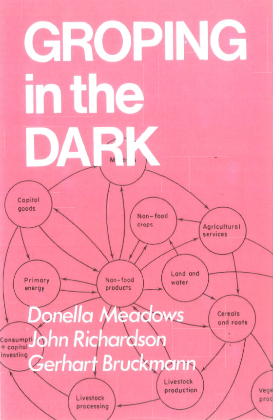
Donella Meadows & John Richardson
& Gerhart Bruckmann - Groping in the Dark
This short article describes some ideas about making models for complex social systems, trying to compare computer models and mental models. I study sociology and social policy, but I never thought of understanding social systems in the way of building rigorous computer models. The author wrote in the agreement, “Computer models of social systems should not be expected to produce precise predictions.” It's hard for me to imagine that complicated social systems can be streamlined to a formula containing defined variables and symbolic relationships. Because it is incredibly challenging to prove causality in social science, somehow, we can only discuss the correlation between variables by empirical data. Nevertheless, it is an exciting opinion to solve global problems through international cooperation, and change in the status quo is certain.